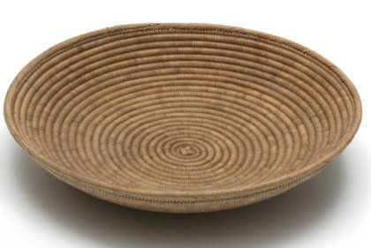

Korb (Worfel?)
Worfel ? #408 nicht gestützt
Unter den 12 ähnlichsten Objekten ist eine Worfel («Winnowing-Tray»), die übrigen heissen «Korbschale», «Korb», «Tablett». Das Bild-Text-Modell kennt das seltene Wort «Worfel» nicht (Rang 408) – den Begriff liefert nur der Vergleich mit anderen Sammlungen.
Ähnlichste Objekte in anderen Sammlungen